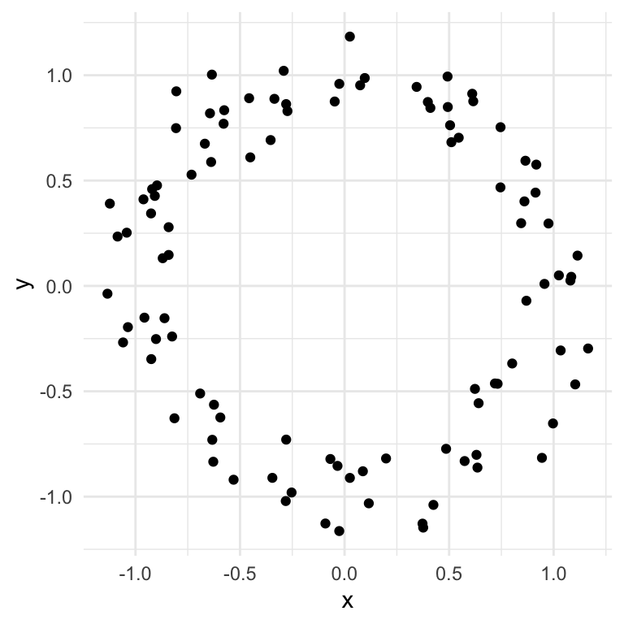
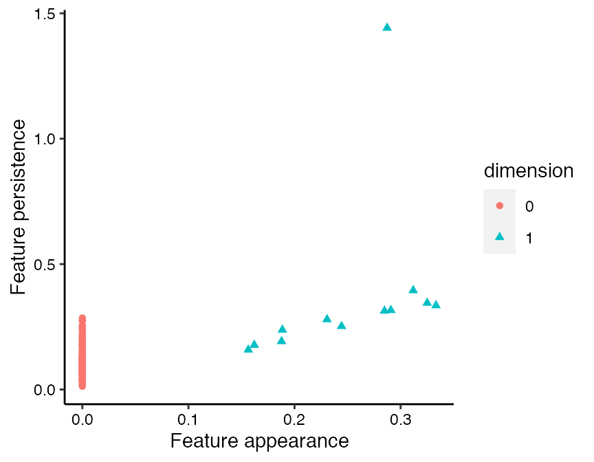
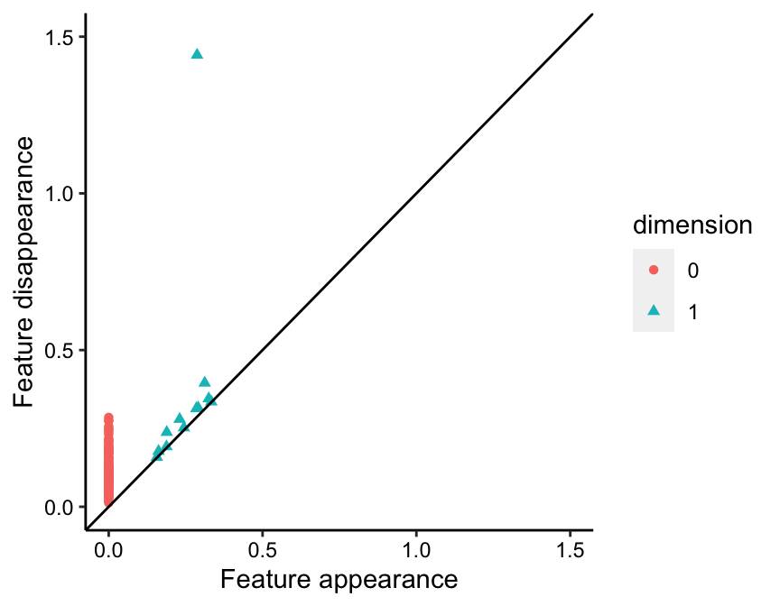

Visualizing persistent homology with ggtda
J. Cory Brunson, Jacob G. Scott, Raoul R. Wadhwa
2020-11-02
Source:vignettes/phom.Rmd
phom.RmdPurpose
The ggtda package provides users with a ggplot2-compatible tool to visualize persistent homology as part of a topological data analysis pipeline. This vignette introduces how users can use ggtda to construct publication-quality topological barcodes (Carlsson et al.; Ghrist), flat persistence diagrams (Wadhwa et al.), and diagonal persistence diagrams (Edelsbrunner, Letscher, and Zomorodian).
Setup and dataset details
We first setup our environment as follows, attaching the necessary R packages (including ggtda itself!) and loading the required dataset.
The annulus2d dataset (visualized below) comes with ggtda, and will be used to demonstrate each form of visualization.

The annulus2d dataset contains 100 points noisily distributed around the circumference of a unit circle. We will calculate its persistent homology using the ripserr package (following code block) and then plot the result with each of the three visualizations using ggtda.
# calculate persistent homology of annulus and format annulus_phom <- as.data.frame(vietoris_rips(annulus2d)) annulus_phom$dimension <- as.factor(annulus_phom$dimension)
We take a quick peek with head() and tail() to see what the raw form of annulus2d’s persistent homology looks like.
# first few features (0-dimensional) head(annulus_phom) #> dimension birth death #> 1 0 0 0.01285774 #> 2 0 0 0.01815133 #> 3 0 0 0.01910493 #> 4 0 0 0.02926331 #> 5 0 0 0.03059380 #> 6 0 0 0.03230180 # last few features (1-dimensional) tail(annulus_phom) #> dimension birth death #> 106 1 0.2443465 0.2523066 #> 107 1 0.2306282 0.2794531 #> 108 1 0.1885419 0.2378600 #> 109 1 0.1877741 0.1919384 #> 110 1 0.1620650 0.1772953 #> 111 1 0.1564191 0.1584211
Clearly, graphical visualizations would permit easier and more effective interpretation than printing raw data. We will start off by plotting this as a topological barcode.
N.B. although ripserr::vietoris_rips() calculates persistent homology using the Vietoris-Rips complex, persistent homology from another simplicial complex (e.g. Čech complex) can also be visualized with ggtda. To account for this, the axes will be labeled in a generic manner that should be adapted by users depending on the specific context.
Topological barcode (aka persistence barcode)
Topological barcodes plot features as vertically stacked horizontal bars. Here, each bar corresponds to a single feature (single row in annulus_phom) with the left boundary of the bar corresponding to the simplicial complex radius at which the feature appears (birth column in annulus_phom) and the right boundary of the bar corresponding to the simplicial complex radius at which the feature disappears (death column in annulus_phom). Creating a topological barcode with ggtda is straightforward using geom_barcode.
# create topological barcode with appropriate theme ggplot(annulus_phom, aes(start = birth, end = death, group = dimension, colour = dimension)) + geom_barcode() + xlab("Simplicial complex diameter") + theme_barcode()

The group aesthetic orders features by dimension ensuring that all 0-dimensional features a plotted in one group, all 1-dimensional features above them, and so on. The color aesthetic allows for explicit discrimination between features of different dimensions.
Given that an annulus (aka noisy circle) has a Betti-1 number equal to 1, the dominant 1-dimensional feature (or 1-cycle) is plotted just as expected. This finding should be replicated in the persistence diagrams below.
Persistence diagrams
Flat persistence diagrams plot features as points on a scatterplot. Each point corresponds to a single feature (one row in annulus_phom), with the horizontal coordinate equal to the simplicial complex radius at which the feature appears (birth column in annulus_phom) and the vertical coordinate equal to the persistence of the feature (difference between death and birth columns in annulus_phom). Flat persistence diagrams are generated using stat_persistence as follows.
# create flat persistence diagram with appropriate theme ggplot(annulus_phom, aes(start = birth, end = death, shape = dimension, colour = dimension)) + stat_persistence() + xlab("Feature appearance") + ylab("Feature persistence") + theme_persist()

The shape and colour aesthetics redundantly discriminate between features of different dimensions. This is particularly useful when one of the aesthetics (e.g. color) is rendered ineffective (e.g. due to color-blind readers).
Diagonal persistence diagrams can also be generated with stat_persistence by setting the diagram parameter to "diagonal". A reference line often helps interpretation of diagonal persistence diagrams so we add one with geom_abline. Aesthetically, it is also generally pleasing to have the vertical and horizontal axes on a fixed coordinate system with both plotting the same range.
# create diagonal persistence diagrams with adjustments ggplot(annulus_phom, aes(start = birth, end = death, shape = dimension, colour = dimension)) + stat_persistence(diagram = "diagonal") + coord_equal() + geom_abline(slope = 1, intercept = 0) + xlim(c(0, 1.5)) + ylim(c(0, 1.5)) + xlab("Feature appearance") + ylab("Feature disappearance") + theme_persist()

ggplot2::ggsave can be used to save plots produced by ggtda. Thus, running the following line of code will save the most recently plotted diagram (diagonal persistence diagram) as a PNG image file in the local working directory.
ggsave("my-plot.png")
References
Carlsson, Gunnar, Afra Zomorodian, Anne Collins, and Leonidas Guibas. “Persistence Barcodes for Shapes.” International Journal of Shape Modeling 11 (2): 149–87.
Edelsbrunner, Herbert, David Letscher, and Afra Zomorodian. “Topological Persistence and Simplification.” Discrete and Computational Geometry 28 (4): 511–33.
Ghrist, Robert. “Barcodes: The Persistent Topology of Data.” Bulletin of the American Mathematical Society 45 (1): 61–75.
Wadhwa, Raoul, Andrew Dhawan, Drew Williamson, and Jacob Scott. “A Flat Persistence Diagram for Improved Visualization of Persistent Homology.” arXiv, 1812.04567.